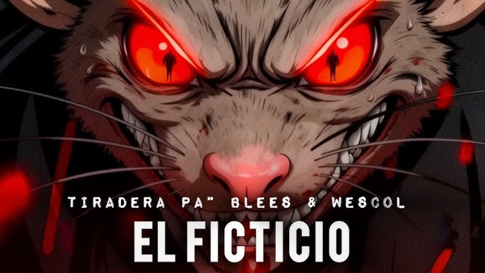
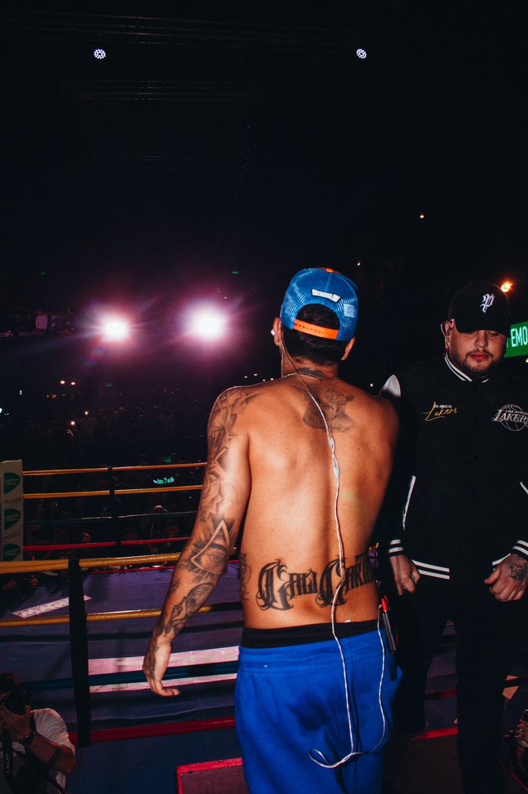

Fotos del artista
En esta sección encontrarás algunas imágenes representativas del artista Pirlo 420 durante su carrera musical.
Sesiones y presentaciones




Imágenes del artista urbano
En esta sección encontrarás algunas imágenes representativas del artista Pirlo 420 durante su carrera musical.

